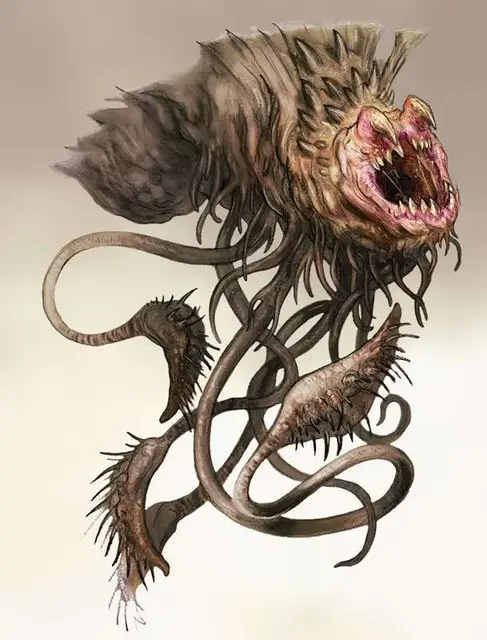

Балханнот
Balhannoth
Большая Аберрация, хаотично-злая

Класс Доспеха 17 (природный доспех)
Хиты 114 (12к10 + 48)
Скорость 25 футов, лазая 25 футов
| мод | спас | ||
|---|---|---|---|
| СИЛ | 17 | +3 | +3 |
| ЛОВ | 8 | −1 | −1 |
| ТЕЛ | 18 | +4 | +8 |
| мод | спас | ||
|---|---|---|---|
| ИНТ | 6 | −2 | −2 |
| МДР | 15 | +2 | +2 |
| ХАР | 8 | −1 | −1 |
Навыки Восприятие +6
Иммунитет к состояниям ослепление
Чувства слепое зрение 500 футов (слеп за пределами этого радиуса), пассивное Восприятие 16
Языки Глубинная речь, Телепатия 1 миля
Опасность 11 (7200 опыта)
Бонус мастерства +4
Среда обитания Горы, Побережье, Подземье
Особенности
Легендарное сопротивление (2/день). Если балханнот проваливает спасбросок, он может вместо этого сделать спасбросок успешным.
Действия
Мультиатака. Балханнот совершает одну атаку укусом и до двух атак щупальцем, либо совершает до четырех атак щупальцем.
Укус. Рукопашная атака оружием: +7 к попаданию, досягаемость 5 футов, одна цель. Попадание: 25 (4к10 +3) колющего урона.
Щупальце. Рукопашная атака оружием: +7 к попаданию, досягаемость 10 футов, одна цель. Попадание: 10 (2к6 +3) дробящего урона, и цель становится захваченной (Сл высвобождения 15) и притягивается на 5 футов ближе к балханноту. Пока цель схвачена, она опутана; у балханнота 4 щупалец, и каждое может держать в захвате только одну цель.
Легендарные действия
Балханнот может совершить 3 легендарных действия, выбирая из представленных ниже вариантов. За один раз можно использоваться только одно легендарное действие, и только в конце хода другого существа. Балханнот восстанавливает потраченные легендарные действия в начале своего хода.
Атака укусом. Балханнот совершает одну атаку укусом на существо, захваченное его щупальцем.
Телепортация. Балханнот магическим образом телепортируется вместе с захваченным существом, со всем своим несомым и носимым снаряжением, на расстояние до 60 футов в свободное пространство, которое он видит.
Исчезновение. Балханнот магическим образом становится невидимым до 10 минут, либо пока не совершит бросок атаки.
Логово
В Царстве теней, балханноты создают гнёзда рядом с местами проживания существ, на которых они ведут охоту. Чаще всего они обитают на уже проторённых дорогах и путях, похищая прохожих гуманоидов. Балханнот, что был схвачен и использован дроу, может гнездиться в пещерах около переходов Подземья и сторожить проходы туда и обратно во владения дроу.
Действия логова
Сражаясь внутри своего логова, балханнот может воспользоваться действиями гнезда. При значении инициативы «20» (в случае ничьей проигрываем всем оппонентам) балханнот может совершить действие логова, чтобы вызвать один следующих эффектов (балханнот не может использовать один и тот же эффект 2 раунда подряд):
• Балханнот искажает реальность вокруг себя на расстоянии 500 футов. Через 10 минут часть местной территории преобразуется в ту местность, о котором подумал разумный гуманоид, чьи мысли были прочитаны балханнотом (смотрите описанный раздел «Эффекты Местности» ниже. Преобразования касаются только неживых объектов окружения, и не могут воссоздать движущиеся элементы и магические свойства. Любой объект, воссозданный на этой местности, при близком осмотре оказывается подделкой. К примеру, в книгах пустые страницы, а золотые предметы фальшивые и так далее. Преобразование длится до тех пор, пока балханнот не будет убит, либо ещё раз не воспользуется этим же действием логова.
• Балханнот наводится на любое существо в пределах 500 футов от него. Существо должно успешно пройти спасбросок Мудрости Сл 16, в противном случае, существо вместе с тем, во что он одет и носит, перемещается в любое свободное пространство по выбору балханнота в пределах 60 футов его видимости.
• Балханнот выбирает целью любое существо в пределах 500 футов от него. Цель должна преуспеть в спасброске Мудрости Сл 16, иначе балханнот становится невидимым для неё на 1 минуту. Эффект оканчивается, если балханнот проводит по цели атаку.
Местные эффекты
Местность, в котором расположено логово балханнота искажается под воздействием сверхъестественных способностей существа, создающих один или более из следующих эффектов:
• Существа в пределах одной мили от логова балханнота испытывают ощущение, что они близки к тому месту, к которому желали больше всего попасть. Приближаясь к логову балханнота, это ощущение становится всё сильнее и сильнее.
• Балханнот может чуять сильнейшие желания любого гуманоида в пределах 1 мили от него и извлекает оттуда любое место, с которым связано этожелание; безопасное место для отдыха, храм, дом или любое другое место.
Если балханнот умирает, эти эффекты немедленно оканчиваются.
Описание
Родом из Царства Теней злобные, хищные балханноты меняют облик своего гнезда на место, привлекающее внимание путников. Как только они входят на них набрасывается балханнот.
Ложная надежда. Благодаря ограниченным возможностям телепатии, балханнот может учуять желания других существ и воображать места, которые те хотели бы встретить на своём пути. Затем балханнот искажает реальность, преобразовывая своё логово в то место, которое жертва желает найти. Балханноты не могут справляться с детализацией объектов, и поэтому многие несоответствия могут разоблачить иллюзию, но подделка достаточно хороша, чтобы обмануть отчаявшихся существ забрести в объятия чудища.
Злобные существа. Балханноты получают удовольствие, наживаясь на страхе и отчаянии страдающей жертвы. Оно запугивает свою добычу, пользуясь способностями, искажающими реальность, скрывая самого себя, пока не сцапает свою жертву. После чего, оно перемещается в другое место и пожирает свою добычу.
Полезные рабы. Охотничьи группы дроу и иные посетители Подземья, порой осмеливаются войти в Царство Теней чтобы изловить балханнота. Этих существ оставляют в качестве стражей, защищая проходы от вторжения врагов и отрезая им пути к отступлению, а также в качестве надсмотрщиков над рабами.